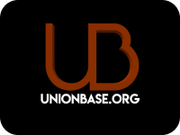

My Journey
Teens Exploring Technology: Summer Coding Leadership Academy
Tech Startup Fellow
- Coaching a team of 4 at-risk teens 11th over the course of 10 weeks to develop an application using the MEAN stack and Ionic framework that solves a social problem in the Southern California community.
- Guiding teams to develop a tech business by teaching them entrepreneurial, technical, and leadership skills. Teaching students to lead a team utilizing the Scrum framework and Business Model Canvas.
Cornell S.C. Johnson Graduate School of Management
Administrative Assistant
- Collected and entered data regarding admissions on Salesforce and Microsoft Office programs, assisted with mailing projects, and performed general office tasks.
- Interacted with and provided hospitality support to prospective students to foster long-term relationships.
Friedland and Associates
Law Intern
- Analyzed police reports, chiropractic records, surgical records, and MRI reports in car accident cases to write 5 demand letters each week to send to various insurance companies.
- Helped attorneys settle insurance policy claims in car accident cases to avoid litigation.

UnionBase
Social Media Specialist
- Used Facebook, Instagram, and Google Analytics to manage paid social media campaigns regarding current racial justice movements and a memorial of front-line workers impacted by COVID-19 with a team of interns.
- Managed UnionBase social media accounts and created graphic design content, reaching thousands of users, to keep individuals updated on current events and increase website traffic.